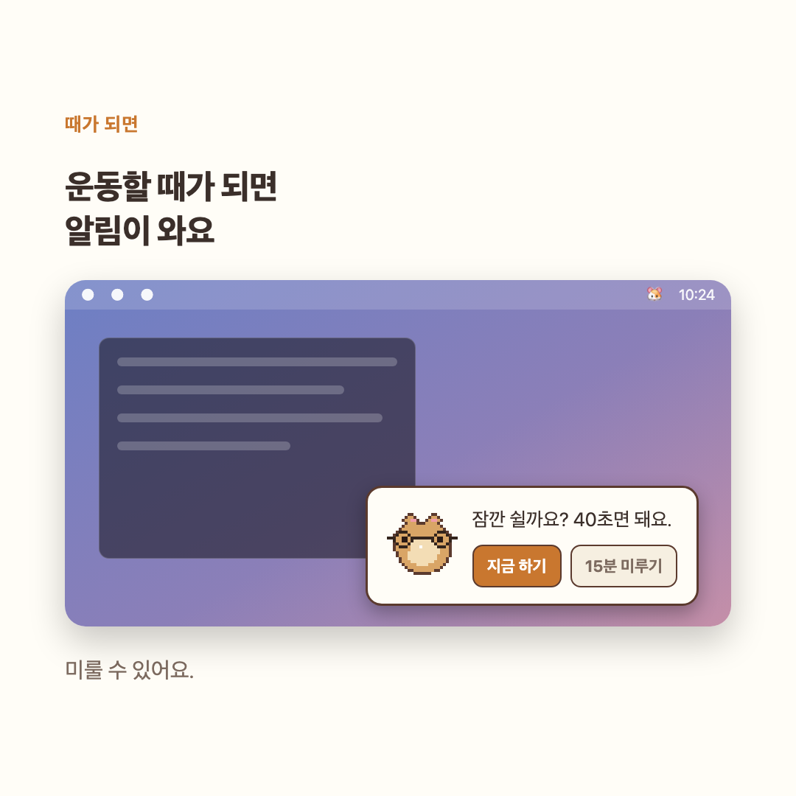
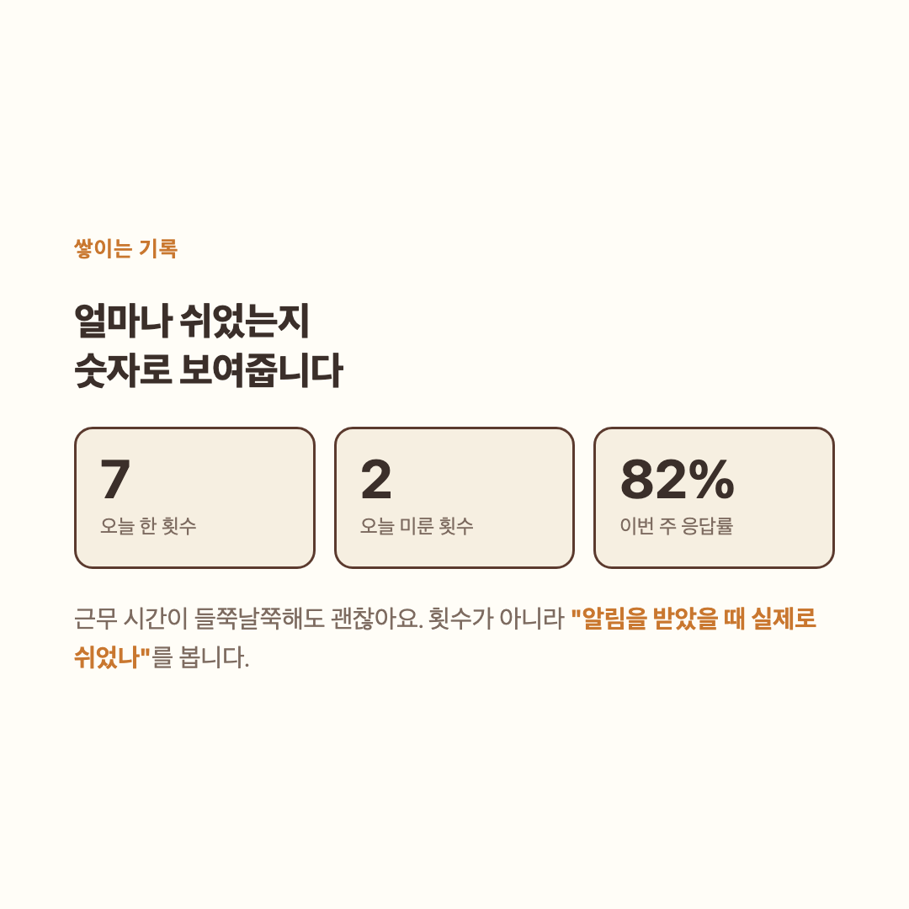

01
바쁠 땐 15분 미뤄요.
화면 구석에 작은 알림이 떠요. 지금 쉬기 어려우면 한 번 눌러 미루세요.

눈 휴식 · 책상 앞 스트레칭
20분마다 햄스터가 알려줘요. 잠깐 먼 곳을 보고, 함께 기지개를 켜세요.
무료 · macOS / Windows
원티드 AI 챔피언십 제출작이에요. 대회 규정상 설치 파일 대신 데모로 보여드립니다. 위 데모를 확인해주세요. 응원하고 싶으시면 투표 한 번 부탁드려요!
처음 열 때만 우클릭 → 열기
알림이 뜨면 지금 쉬거나, 잠깐 미뤄보세요.
화면 구석에 작은 알림이 떠요. 지금 쉬기 어려우면 한 번 눌러 미루세요.

햄스터를 따라 눈을 움직이고, 먼 곳을 보고, 기지개를 켜요. 눈 보호를 위한 휴식과 책상 앞 스트레칭을 짧게 챙겨요.
쉰 횟수와 미룬 횟수를 주간 기록에서 확인할 수 있어요.

꾸미기 미리보기
개발자 세트의 후드티, 헤드폰, 커피, 키보드를 조합해보세요.
앱은 무료예요. 추가 꾸미기 아이템은 판매를 준비하고 있어요.
고장이 아니에요. 애플 서명이 없어서 더블클릭은 맥이 막아요. 우클릭(또는 control+클릭) → 열기 → 한 번 더 열기. 새 버전마다 한 번씩 필요해요.
오래 앉아 있다면 알림을 계기로 자세를 바꾸거나 자리에서 일어나 보세요. 기지개햄은 쉬는 시간을 알려주고 기지개를 함께하는 앱이에요.
하루 종일 켜둬도 배터리가 눈에 띄게 줄지 않아요. 쉬는 동안에는 화면 구석만 그리고, 운동할 때만 화면 전체를 써요.
아무 데도 안 가요. 기록은 이 컴퓨터 안 파일 하나에만 쌓여요. 인터넷은 하루 한 번, 새 버전이 있는지 확인할 때만 GitHub에 접속하고 그때도 기록은 보내지 않아요. 파일을 지우면 기록도 사라져요.
베타로 돼요. 위에서 Windows를 고르면 받을 수 있어요. 아직 실기기 검증을 막 시작한 단계라 문제가 있을 수 있어요.
안 나요. 화면 구석에 카드만 조용히 떠요.
설정에서 10분, 20분, 30분, 45분, 60분 중에 고를 수 있어요.
메뉴바에서 "위치 옮기기"를 누르면 햄스터를 끌어서 옮길 수 있어요. 놓은 자리는 앱을 껐다 켜도 그대로예요.
설정에서 끄면 평소에는 안 보여요. 눈운동할 때만 나타나요. 눈으로 따라갈 대상이 있어야 하니까요.
지금 마우스가 있는 화면으로 따라와요. 이것도 설정에서 끌 수 있어요.
한국어와 영어요. 설정에서 바꿔요.
시스템 설정을 따라가고, 원하면 밝게나 어둡게로 고정할 수도 있어요.
3분 넘게 아무것도 안 누르면 알림을 띄우지 않아요. 돌아왔을 때 낡은 알림이 쌓여 있지 않아요.
무료예요.
앱을 휴지통에 넣으면 끝이에요.
설치하고 알림 간격을 고르면 돼요.
무료로 받기무료 · macOS / Windows